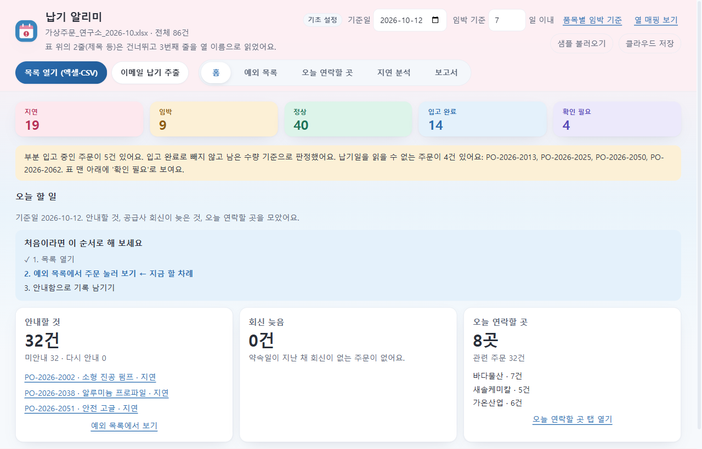
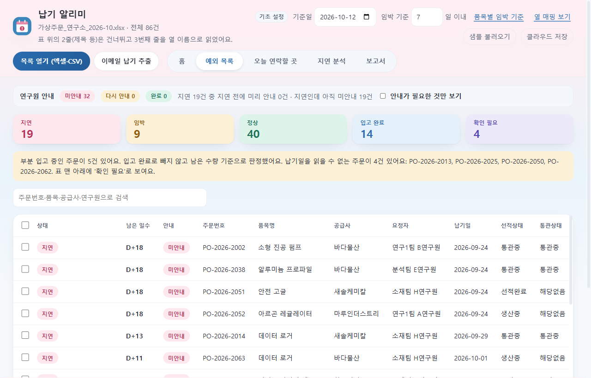

데모 데이터: 가상 엑셀을 따로 만들어 넣었습니다
"가상 데이터입니다"라고만 적지 않고, 회사 시스템에서 내보낸 것처럼 보이는 가상 주문 엑셀(86건)을 따로 만들어 앱에 그대로 열어 봤습니다. 실제 회사·사람·주문이 아니고, 생성기(make-demo-data.js)로 언제든 같은 내용을 다시 만듭니다.
| 일부러 넣은 것 | 왜 | 앱이 한 일 |
|---|---|---|
| 위에 제목 줄 2개, 합친 칸 | 실제 엑셀은 표가 첫 줄에서 시작하지 않는 일이 많습니다 | "표 위의 2줄은 건너뛰고 3번째 줄을 열 이름으로 읽었어요" |
| 열 이름이 다름 (발주번호, 거래처, 신청자, 납기예정일, 누적입고) | 회사마다 열 이름이 제각각입니다 | 13개 열을 자동으로 연결 |
| 날짜 모양이 섞임 (엑셀 날짜, 2026/10/6, 26.10.11) | 사람이 손으로 친 날짜가 섞여 있습니다 | 모두 같은 날짜로 읽음 |
| 납기가 "10월 말", "미정" 같은 글 | 읽을 수 없는 값을 추측하면 거짓 안내가 됩니다 | 날짜를 지어내지 않고 "확인 필요" 4건으로 분류 |
| 일부만 입고된 주문 | 분납은 흔합니다 | 남은 수량 기준으로 판정 (5건) |
기준일 2026-10-12에서 86건 → 지연 19 · 임박 9 · 정상 40 · 입고 완료 14 · 확인 필요 4. 이 숫자는 단위 시험이 매번 확인합니다.


직접 써 보기
- 설치 파일 받기 버튼으로
DeliveryWatch-Setup-0.7.2.exe를 받아 실행합니다. - "Windows가 PC를 보호했습니다" 화면이 나오면 추가 정보 → 실행을 누릅니다. 코드 서명 인증서가 없는 개인 프로젝트라 나오는 경고입니다.
- 앱에서 샘플 불러오기를 누르면 가상 주문 38건이 열립니다. 더 현실적인 파일로 해 보려면 위 가상 주문 엑셀을 받아 목록 열기로 여세요. 주문을 눌러 "안내함으로 기록"을 해 보세요.
- 클라우드 저장은 꺼진 상태가 기본이고, 쓰려면 본인의 Supabase 프로젝트가 필요합니다. 안 켜도 모든 기능을 쓸 수 있습니다.
앱에는 서버 주소나 키가 들어 있지 않고, 인터넷으로 나가는 통신은 사용자가 직접 켰을 때만 일어납니다. 내 기록은 내 컴퓨터의 %APPDATA%\delivery-watch 폴더에 저장됩니다.